Procurement & Inventory MVP
Portfolio MVP developed in Dataverse and Power Apps Model-Driven to practice procurement, requisitions, purchase orders, inventory, Business Process Flows, and approval patterns with Power Automate.
1) Context / objective
This MVP was built as a portfolio project to practice Dataverse data modeling, model-driven apps, process guidance with Business Process Flows, and approval automation.
Procurement and inventory was selected because it represents real relationships between products, suppliers, projects, requisitions, purchase orders, and inventory movements.
2) Implemented solution
MVP core
- Model-driven app organized by procurement, inventory, projects, and catalogs.
- Dataverse model with related operational and catalog tables.
- Requisition BPF: capture, approval request, resolution, and closing.
- Purchase Order BPF: capture, approval, issuing, and follow-up.
- Approval flows with Power Automate and Dataverse status updates.
Design approach
- Separation between operational entities and catalogs.
- Use of lookups, choices, and relationships to reduce free-text capture.
- Stage-based process guidance to organize user execution.
- Foundation prepared for future business rules, validations, and reporting.
3) Model and structure
Data model
- Products, suppliers, customers, and projects as base entities.
- Requisitions and purchase orders as transactional entities.
- Inventory movements and balances for operational tracking.
- Relationships designed to support forms, views, BPFs, and flows.
Automation
- Business Process Flows to guide requisition and purchase order stages.
- Power Automate Approvals to approve or reject requests.
- Status fields updated in Dataverse based on the approval outcome.
- Foundation to incorporate inventory validations and authorization rules.
4) Key features
- Process-guided UX: visible stages through Business Process Flows.
- Relational model: catalogs referenced by lookups instead of free text.
- Basic approvals: approved/rejected result reflected in Dataverse.
- Inventory structure: movements and balances ready to evolve into stronger rules.
- Visual documentation: screenshots of tables, columns, BPFs, flows, and sitemap.
5) Scope
Included
- Main tables for products, suppliers, customers, and projects.
- Requisitions, purchase orders, and detail lines.
- Inventory: movements and balances.
- Two Business Process Flows.
- Basic approval flows.
Not included in this version
- Power BI dashboards.
- Complete role and permission matrix.
- Formal Dev/Test/Prod ALM.
- Load testing or production hardening.
7) Next improvements
- Add role matrix: requester, approver, procurement, and warehouse.
- Add inventory rules: no negative stock, movement types, and audit trail.
- Add operational dashboards: backlog, cycle time, and aging approvals.
- Formalize ALM: managed solution, environment variables, and connection references.
Screens
Representative screenshots of the solution.
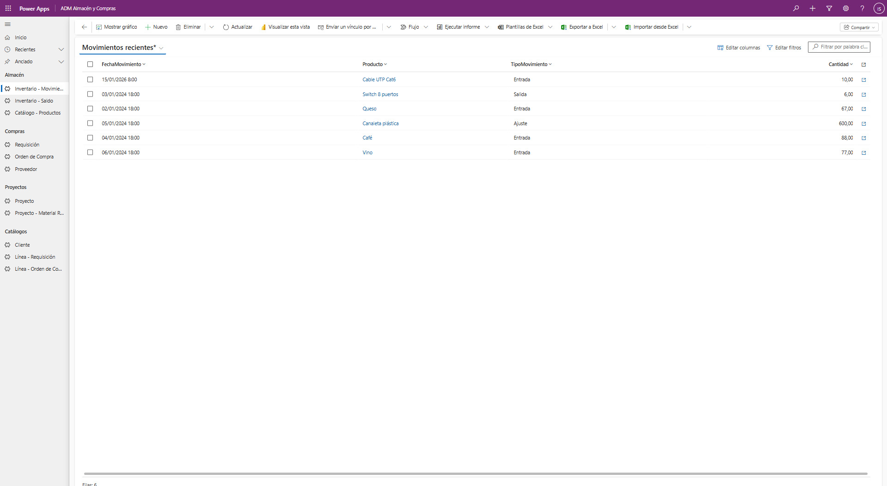
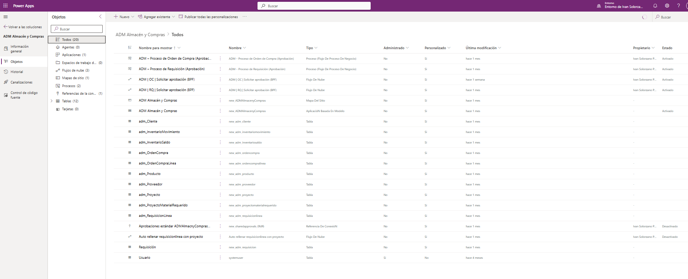
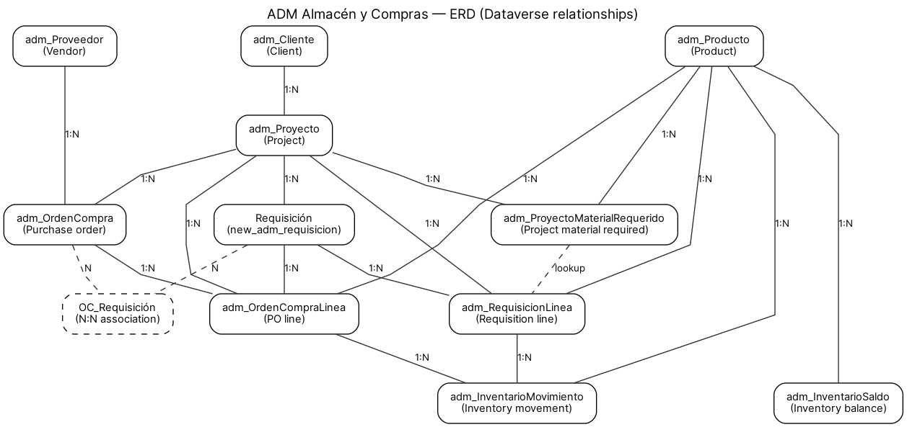
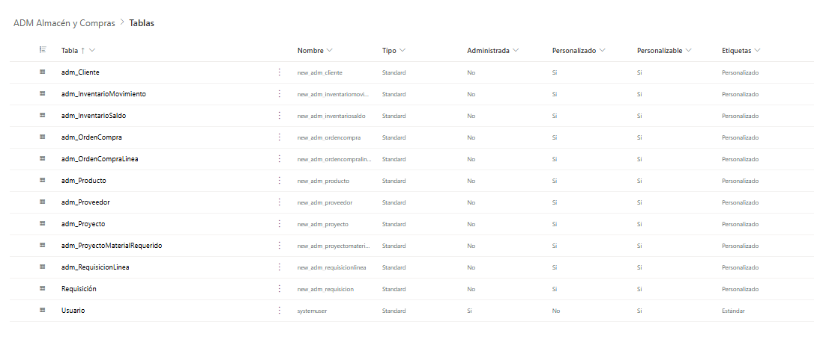
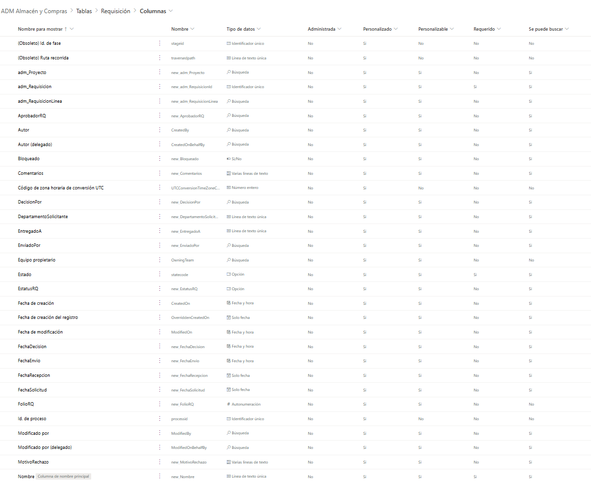
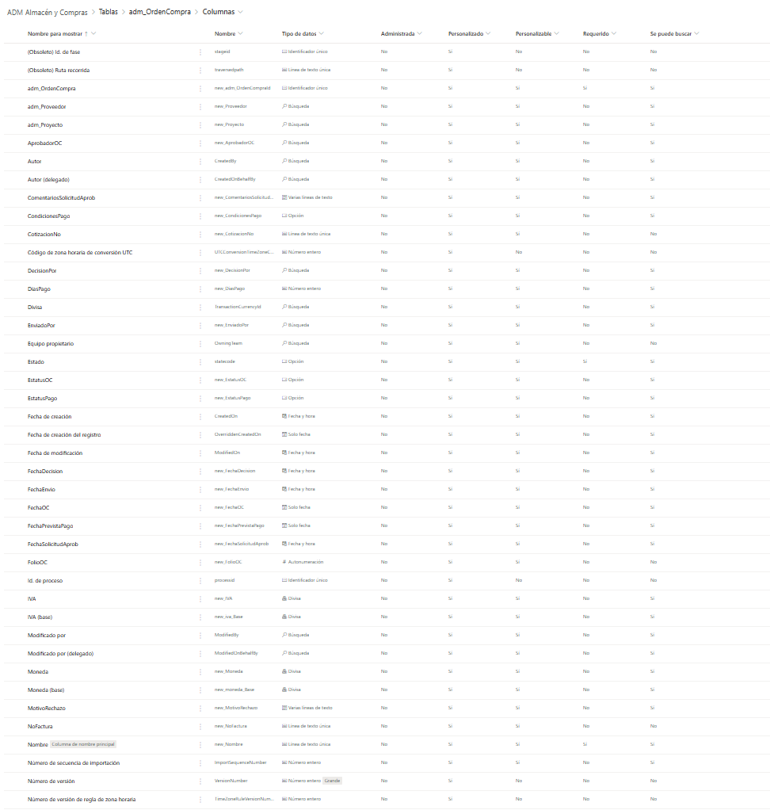
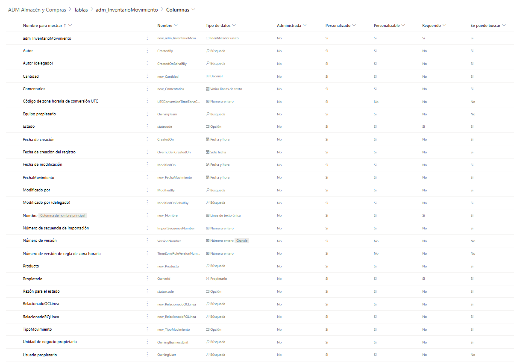
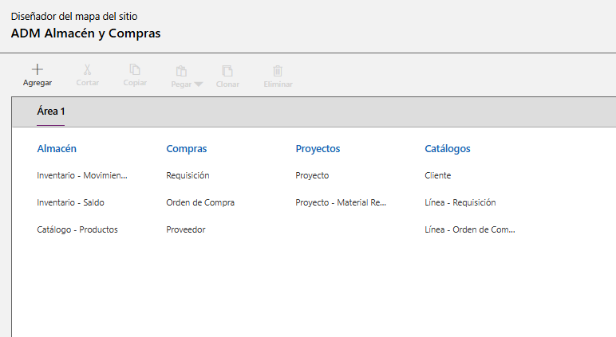
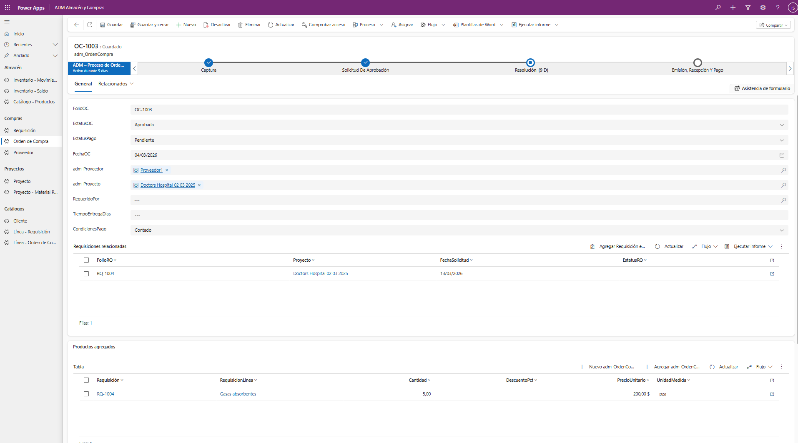
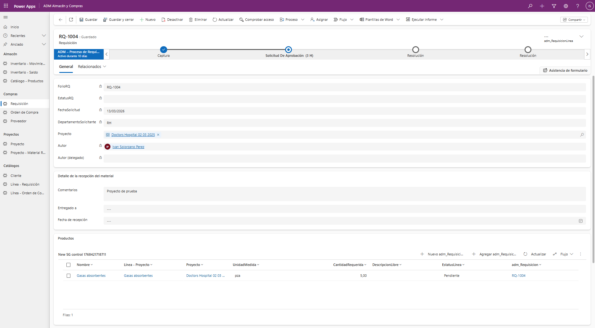
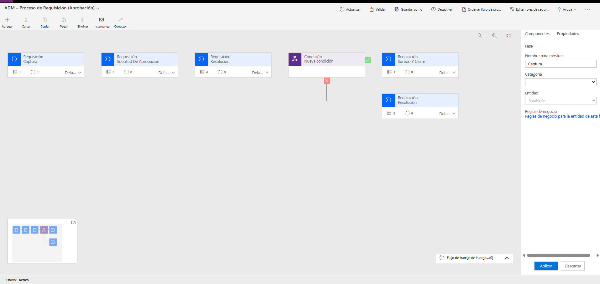
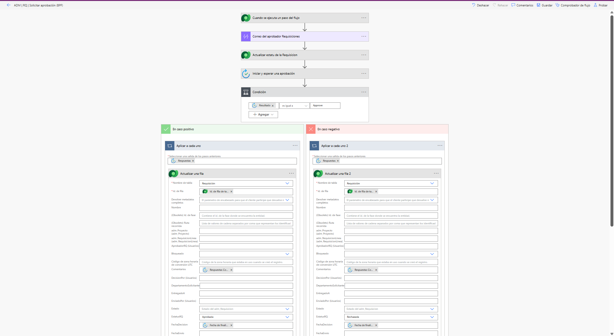
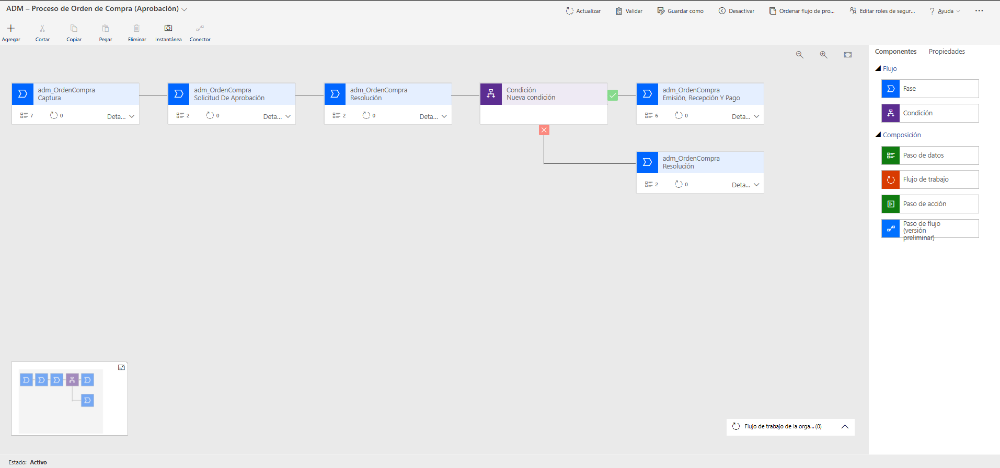
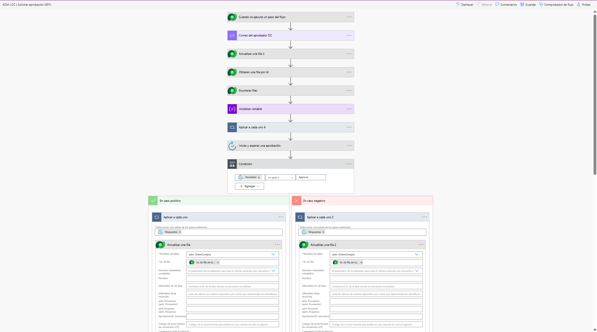